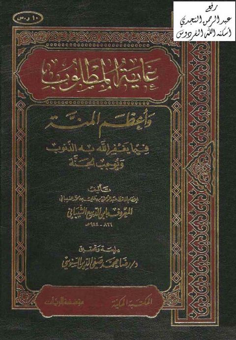
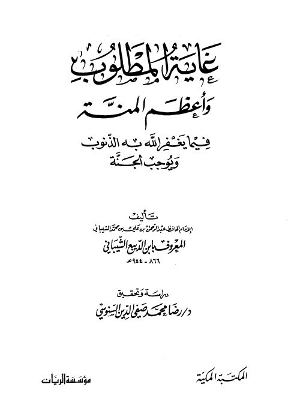

غاية المطلوب وأعظم المنة فيما يغفر الله به الذنوب ويوجب الجنة غاية المطلوب وأعظم المنة فيما يغفر الله به الذنوب ويوجب الجنة عبد الرحمن بن علي بن محمد الشيباني ابن ربيع الشيباني
غاية المطلوب وأعظم المنة فيما يغفر الله به الذنوب ويوجب الجنة غاية المطلوب وأعظم المنة فيما يغفر الله به الذنوب ويوجب الجنة عبد الرحمن بن علي ابن الدبيع الشيباني